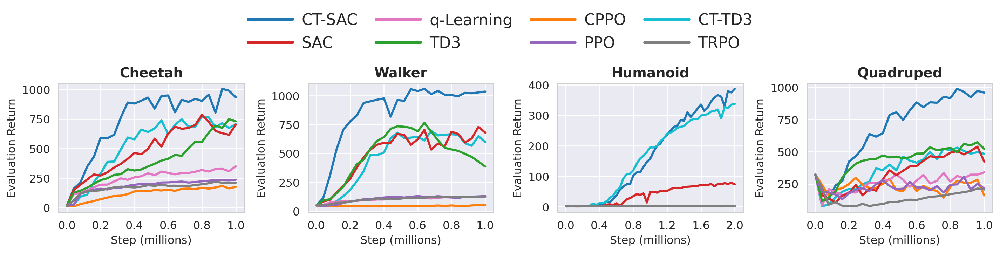
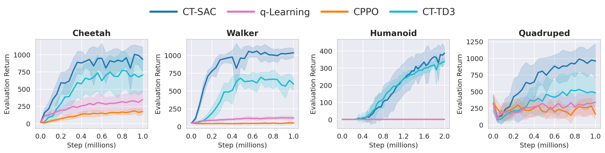
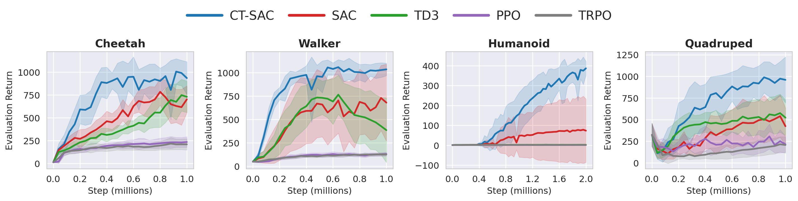
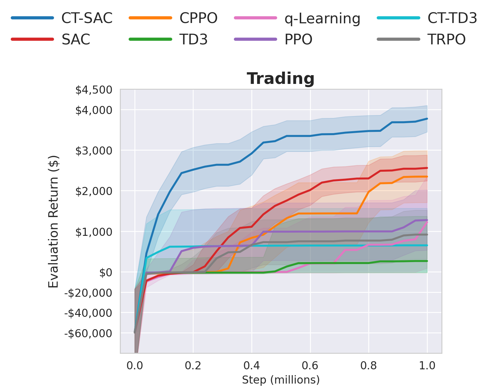
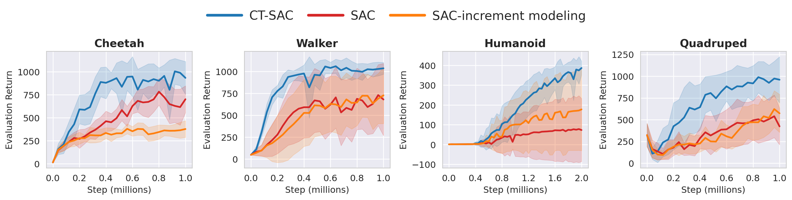
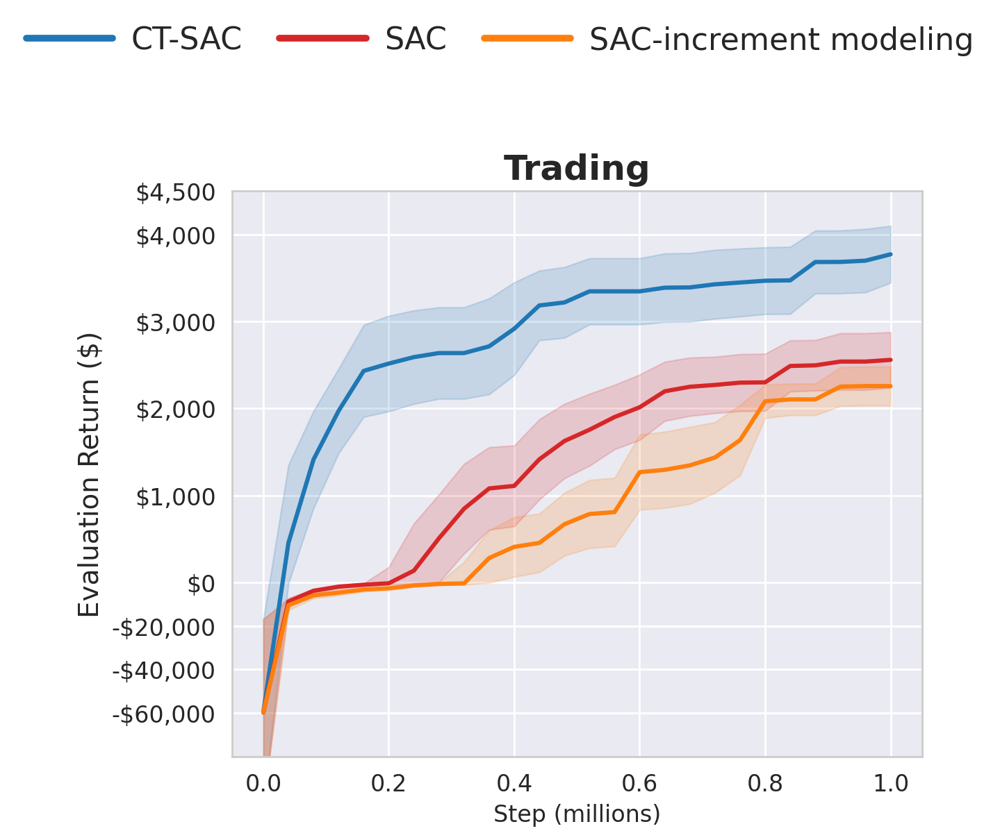

Experiments
We move beyond fixed-step simulated SDE benchmarks and asks the practical question behind the paper: Do continuous-time methods help when trajectories truly mix small and large decision durations within the same rollout?
Irregular-time control

Tasks and baselines
Across all tasks, the agent acts at event times $t_0 < t_1 < \cdots$ with holding times $u_k := t_{k+1}-t_k$ that mix between small and large timesteps within the same rollout. Trajectories therefore contain many short "micro-steps" interleaved with occasional larger jumps. This is harder than fixed-step training because critics must generalize across non-aligned time increments rather than fit a single nominal step size.
Control tasks
Four DeepMind Control Suite benchmarks: cheetah-run, walker-run,
humanoid-walk, and quadruped-run. Irregular timing is especially important for
humanoid and quadruped locomotion, where stability depends on timely corrective actions.
Trading
A minute-resolution Alpaca-based environment with four industry sectors, five large-cap tickers per sector, two-week episodes, action-dependent transaction costs, and holding times in $[1,20]$ minutes. Rewards equal realized profit over the next holding interval.
Baselines
Continuous-time baselines: q-Learning with martingale enforcement and policy-gradient CPPO. Discrete-time baselines: SAC, TD3, TRPO, and PPO. Each method is tuned, evaluated periodically, and then aggregated over 12 seeds.
Bencmarking plots
Continuous-time baselines

Discrete-time baselines

Trading performance

Result summary
Continuous-time baselines
CT-SAC and CT-TD3 are the strongest continuous-time methods across both the control suite and the trading task. This is due to optimization structure of the decoupled update compared with coupled martingale objectives.
Discrete-time baselines
CT-SAC also outperforms leading fixed-step algorithms. Under mixed holding times, discrete-time critics can degrade because they must absorb multiple time scales into one fixed-step target.
Trading
Continuous-time modeling appears especially relevant in trading. CPPO becomes more competitive than it is on locomotion benchmarks, but CT-SAC remains the strongest overall method.
Generalization to regular-time evaluation
We also tests whether policies trained under irregular decision times transfer back to the standard regular-time setting. This is a strong check that the learned policy captures the underlying control structure rather than overfitting to one irregular schedule.
| Task | CT-SAC | SAC | TD3 | PPO | TRPO | q-Learning | CPPO | CT-TD3 |
|---|---|---|---|---|---|---|---|---|
| Cheetah | 605.05 | 455.74 | 404.18 | 124.45 | 104.46 | 208.04 | 102.03 | 513.39 |
| Walker | 610.03 | 403.44 | 509.23 | 73.06 | 64.55 | 70.94 | 25.04 | 512.30 |
| Humanoid | 404.64 | 77.14 | 2.27 | 1.34 | 1.35 | 1.90 | 1.42 | 356.90 |
| Quadruped | 530.13 | 328.30 | 325.87 | 159.52 | 121.84 | 192.86 | 125.30 | 284.23 |
Ablations
We also reports top/second/third configurations for each method and task.
| Task | CT-SAC top | Best discrete baseline top | Best continuous baseline top |
|---|---|---|---|
| Cheetah | 934.76 | 730.12 (TD3) | 705.86 (CT-TD3) |
| Walker | 1035.52 | 680.08 (SAC) | 596.50 (CT-TD3) |
| Humanoid | 386.75 | 73.39 (SAC) | 337.23 (CT-TD3) |
| Quadruped | 959.75 | 522.63 (TD3) | 484.25 (CT-TD3) |
| Trading | 37.72 | 25.59 (SAC) | 23.46 (CPPO) |
Full ablation tables
| Task | CT-SAC top / second / third | SAC top / second / third | TD3 top / second / third |
|---|---|---|---|
| Cheetah | 934.76 / 863.45 / 807.19 | 701.88 / 680.30 / 605.63 | 730.12 / 694.15 / 692.81 |
| Walker | 1035.52 / 928.26 / 817.28 | 680.08 / 560.98 / 522.85 | 385.73 / 286.09 / 191.74 |
| Humanoid | 386.75 / 379.75 / 371.75 | 73.39 / 39.28 / 2.12 | 2.28 / 2.24 / 2.11 |
| Quadruped | 959.75 / 958.44 / 829.41 | 423.33 / 314.77 / 284.00 | 522.63 / 518.37 / 464.95 |
| Trading | 37.72 / 33.09 / 31.98 | 25.59 / 21.04 / 13.77 | 2.67 / -5.46 / -9.46 |
| Task | CT-SAC top / second / third | TRPO top / second / third | PPO top / second / third |
|---|---|---|---|
| Cheetah | 934.76 / 863.45 / 807.19 | 210.10 / 190.51 / 170.73 | 235.61 / 208.42 / 206.70 |
| Walker | 1035.52 / 928.26 / 817.28 | 126.73 / 119.95 / 114.90 | 129.94 / 120.28 / 118.08 |
| Humanoid | 386.75 / 379.75 / 371.75 | 1.39 / 1.33 / 1.30 | 1.18 / 1.17 / 1.11 |
| Quadruped | 959.75 / 958.44 / 829.41 | 206.24 / 178.01 / 135.29 | 214.13 / 208.47 / 202.72 |
| Trading | 37.72 / 33.09 / 31.98 | 9.17 / -3.36 / -4.77 | 12.76 / 11.94 / 4.19 |
| Task | CT-SAC top / second / third | CPPO top / second / third | q-Learning top / second / third | CT-TD3 top / second / third |
|---|---|---|---|---|
| Cheetah | 934.76 / 863.45 / 807.19 | 174.50 / 168.64 / 145.92 | 348.61 / 328.69 / 272.00 | 705.86 / 457.24 / 268.61 |
| Walker | 1035.52 / 928.26 / 817.28 | 51.77 / 44.24 / 42.04 | 119.78 / 94.79 / 74.67 | 596.50 / 578.19 / 567.22 |
| Humanoid | 386.75 / 379.75 / 371.75 | 1.16 / 1.08 / 1.04 | 1.81 / 1.59 / 1.28 | 337.23 / 326.61 / 295.94 |
| Quadruped | 959.75 / 958.44 / 829.41 | 160.19 / 159.80 / 159.05 | 339.49 / 299.32 / 216.92 | 484.25 / 455.86 / 345.87 |
| Trading | 37.72 / 33.09 / 31.98 | 23.46 / 23.37 / 22.32 | 12.22 / 2.37 / -39.94 | 6.53 / -0.11 / -6.22 |
Increment modeling
We tests a reward-shaping variant, $r_t^{\text{new}}=\Delta_t r_t$, to see whether scaling rewards by observed time increments helps under non-uniform durations. It does not. In most cases, performance is worse or statistically indistinguishable from the unshaped discrete-time baseline.
Control tasks

Trading task

Irregular time statistics
Below are the time statistics for the irregular time settings on each task.
| Task | $\Delta t_{\text{physics}}$ | $\Delta t_{\min}$ | $\Delta t_{\max}$ | % small | % large | % avg | $T_{\max}$ | steps / episode |
|---|---|---|---|---|---|---|---|---|
| Cheetah | 0.0020 | 0.002 | 0.030 | 89.1% | 9.9% | 1.0% | 10 | 1200-2000 |
| Walker | 0.0025 | 0.005 | 0.075 | 89.1% | 9.9% | 1.0% | 25 | 1200-2000 |
| Humanoid | 0.0050 | 0.010 | 0.040 | 40.0% | 40.0% | 20.0% | 25 | 800-1000 |
| Quadruped | 0.0050 | 0.005 | 0.050 | 89.1% | 9.9% | 1.0% | 20 | 1200-2000 |
| Trading | 1 | 1 | 11 | 89.1% | 9.9% | 1.0% | 4000 | 1600-2100 |
Runtime, complexity, and infrastructure
The runtime appendix shows that CT-SAC is in the same rough training-cost range as SAC, and CT-TD3 is comparable to TD3. The continuous-time modifications mainly change target construction, not the overall asymptotic structure of batched actor-critic training.
| Task | CT-SAC | SAC | TD3 | TRPO | PPO | CPPO | q-Learning | CT-TD3 |
|---|---|---|---|---|---|---|---|---|
| Cheetah | 10.62 ± 0.53 | 6.29 ± 0.04 | 3.98 ± 0.05 | 0.44 ± 0.07 | 0.29 ± 0.07 | 0.57 ± 0.06 | 9.12 ± 0.17 | 4.60 ± 0.04 |
| Walker | 9.69 ± 0.83 | 8.90 ± 0.54 | 4.57 ± 0.24 | 0.40 ± 0.00 | 0.41 ± 0.07 | 0.61 ± 0.04 | 5.59 ± 0.08 | 4.68 ± 0.09 |
| Humanoid | 8.30 ± 0.50 | 6.02 ± 0.09 | 3.87 ± 0.06 | 0.82 ± 0.01 | 0.48 ± 0.02 | 1.01 ± 0.02 | 5.07 ± 0.14 | 5.32 ± 0.16 |
| Quadruped | 8.21 ± 0.41 | 6.49 ± 0.04 | 4.66 ± 0.04 | 0.40 ± 0.02 | 0.41 ± 0.01 | 0.36 ± 0.01 | 6.87 ± 0.32 | 2.65 ± 1.91 |
| Trading | 8.42 ± 0.11 | 7.42 ± 0.07 | 4.90 ± 0.08 | 0.81 ± 0.00 | 0.52 ± 0.01 | 0.89 ± 0.17 | 6.38 ± 0.10 | 5.44 ± 0.08 |
Compute resources, statistical testing, and reproducibility notes
Time complexity. If $N$ is the number of environment interaction steps, $f$ is the update frequency, and $d$ is the number of gradient steps per update event, total update work scales as $\mathcal O(Nd/f)$. CT-SAC adds time-aware target computations but does not change the asymptotic update pattern relative to SAC.
Statistical testing. We also conduct Welch's t-test and paired tests over the same 12 seeds across methods. These tests support that CT-SAC outperforms the baselines with statistically significant differences in the majority of settings.
Compute resources. The experiments used a mixture of CPU-only and GPU-accelerated HPC nodes, including high-core-count CPU systems and NVIDIA GPU nodes. Each run used a single node.
Codebase. Full hyperparameter search spaces, significant-testing outputs, and reproducibility instructions are available in the Codebase.
Gallery page
Additional images and videos are available at the gallery page:
Trading media
Qualitative trading plots together with CT-SAC, SAC, CPPO, and side-by-side trading videos.
Irregular-time control
Per-task qualitative images and top-mean rollout videos against both continuous-time and discrete-time baselines.
Regular-time transfer
Regular-time evaluation media for policies trained under irregular time steps, both as static images and videos.